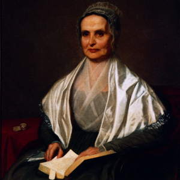

The Seneca Falls Convention was held in the summer of 1848, between the days of July 18 – 20 in Seneca Falls, in upstate New York. It has been credited as the first, formalized meeting of women’s rights activists in America. At this point, there was no talk of feminism – the rhetoric was about women’s rights.
The primary organizer of the convention was Elizabeth Cady Stanton, a clinical narcissistic with serious issues relating towards male approval. Lucretia Mott – Stanton’s sidekick – also exerted a serious level of influence on the convention, but she was little more than an instrument for Stanton’s ideological views.
Elizabeth Cady Stanton
Elizabeth Cady Stanton is quite possibly one of the most influential people in American history. Her psychologically deficient childhood birthed her feminism. She was born into great wealth with a father who was a prominent lawyer; there were eleven children born into the family, five of whom died in early childhood. This caused her mother to fall into a life-long depression. Her father’s robust professional life prevented him from having a great influence on her directly. The parenting in the family fell to the eldest daughter – never a good situation.
Stanton took to her father’s legal library and began to develop a knowledge base. She attended elite primary schools and won awards for her debating skills. Her father famously remarked after her getting an award, “How I wish you were a boy!” Stanton took this comment to believe that he valued boys over girls. In reality, he valued them differently, not the same. A key error in feminism is that they assume men and women are the same and as such, valuing a man for this and a women for that necessarily means a person values the man over the woman.
However, we see the profile of a woman desperately seeking the approval of men, starting with her father. Her mother was a supremely weak person and that probably fueled her own inability to value a woman’s distinct contribution to a marriage and childrearing. As such, she found a weak man to marry and took on the role of “voluntary motherhood.” She rubbed elbows fellow 1%’ers in New York City and loved the intellectual debate – probably all fueling her narcissism as she got to feel superior to men as a class if she bested a man in a debate.
Eventually, she moved to Seneca Falls, where she fell into depression because of the lack of intellectual stimulation, in which she did not get her narcissistic self-preening validated. She traveled to London in 1840 to the Anti-Slavery convention, where she met Lucretia Mott. The two bonded over women’s rights, as they were not allowed to speak or vote at the convention. The organizers were rightfully worried the two would derail the convention with women’s rights rhetoric.

Lucretia Mott
Lucretia Mott, herself, was a Quaker and was primarily interested in abolishing slavery. Her interest in women’s rights paled in comparison to Stanton’s, especially as Stanton radicalized her views. Mott was interested in expanding social respect (worship) for women’s roles in society. Women like her were strong proponents of women as men’s moral superiors. She was opposed to female suffrage, noting that politics are corrupt and subject to power relations that prevent true morality from being expressed. Mott observed that voting isn’t as relevant as Stanton thought.
However, their deep friendship and mutual correspondence lead to the Seneca Falls Convention. Predictably, the narcissistic Stanton insisted it be in the town in which she lived, which is quite the demand in a world that doesn’t have the automobile. Regardless, around 300 people showed up the event headlined by Stanton and Mott. It was held in late July during a heat spell.
On the first day, men were required to be silent as the two headliners talked about the importance of women’s rights as general concept. Stanton recited her “Declaration of Sentiments” in the morning session. Later that day, debates over female suffrage occurred, with a “humorous” recounting of a woman’s idea that she works so much harder than her husband – her slaving away all day while he comes home from work to sit around. That woman is already admitting she has class privilege as not many men worked outside the home in such a manner in America.
![[Image: douglass-20Colored.jpg]](http://www2.mansfield.edu/www/frederick-douglass-institute/images/douglass-20Colored.jpg)
Fredrick Douglass
The second day was the most important. Stanton’s declaration was adopted by the entire convention, with men’s and women’s signatures segregated on the basis of sex – in the name of equality, of course. What is most striking is the only black person allowed to the event – Fredrick Douglass – gave a rousing speech about the equality of all people, black and female, that is often cited as marrying the nascent women’s rights movement and abolition as one. That isn’t what really happened.
Before considering race and voting rights, consider the roots of Christianity in women’s rights. Stanton herself distanced herself from Christianity, but she knew if she was to reach women, she needed to use Christianity. Her declarations were couched in Biblical exhortations. She argued that female happiness was the touchstone for social approaches to sex relations, but then would argue men and women were created equal by God. She used Christianity to appeal to women, but knew that she could never get the world she wanted purely through Christianity.
In the end, she knew that she could get to women via naked emotional appeals; the problem was she was not a great orator nor had the ability to relate to women at large because she was a narcissist. So, she used Mott to give rousing speeches to the women in the evening sessions. Mott was the one that cemented the convention, as her speeches brought tears to the eyes of women and laid the groundwork for Stanton’s radicalism.
The convention ended with a good bit of fanfare. Unlike what any feminist would tell you, the convention was met with, in totality, tepid approval. There were many newspapers & intellectuals that did not approve of the convention, but a very good bit of people agreed with the convention. The ideas that women should have easier access to divorce, custody rights and independent income streams wasn’t as radical as some would argue. The radical idea was women’s right to vote.
![[Image: 1Untitled-1_copy_article-small_1912.jpg]](http://static.ebony.com/1Untitled-1_copy_article-small_1912.jpg)
In the aftermath of the Civil War, a few Constitutional Amendments were considered. The least controversial one, the 13th Amendment, officially abolished slavery and involuntary servitude. However, a serious rift developed in the women’s rights movement – between those who supported universal enfranchisement for all men, and those that did not and insisted on an equal voting rights Amendment that included women.
The 14th & 15th Amendment concerns discrimination based on race and black male voting rights. The impetus for the 14th Amendment was to ensure equal enforcement of the laws for both whites and blacks. Of course, it took over 100 years to see this idea reflected in reality.
Stanton, and many of her supporters, refused to support either Amendment, saying it should not be in the Constitution if women are not included. This caused quite the rift in the movement, as many women’s rights activists were white supremacists. Others were put off by Stanton’s insistence that black and female emancipation should be tied at the hip.
Fredrick Douglass argued that white women already enjoyed class privilege, marriage privilege and the fact many women can bend their husband’s ears, as well as their son’s and brother’s. Stanton and her supporters had a bad reaction to his assertions, claiming all men were privileged in society. He eventually backtracked in his comments, eventually suborning himself to Stanton’s views. Yes, in the 1860’s, early feminists believed black men enjoyed privilege that white women did not. Douglass stood by when Stanton relied on highly racist language in order to move white female approval away from both Amendments; he stayed by her side as a friend and never spoke ill of her, even as he knew women like Stanton wanted to hijack the civil rights movement in order to push women’s rights causes.
That had been Stanton’s whole life, inserting herself wherever possible in order to talk about herself, although she masked that self-absorption by claiming to be talking about women as a class. Clearly distraught black people were getting legal protections that women didn’t have, she demanded to marry women’s rights and equality between whites and blacks because she felt that black people were achieving too much before women did.
In her life, women came first. Even just after the ending of slavery, this woman was spitting rhetoric of male privilege into the faces of black men. Douglass was powerless because feminism is a movement for white women and, as such, he had little to no ability to alter it. As such, she was able to maintain her delusion that all men had this inalienable privilege – in her world, even newly freed black men enjoyed social privilege that white women could not enjoy.
The takeaway lesson here isn’t at all about what rights women or men should or shouldn’t have, but simply the completely self-absorbed roots of American feminism. Notice how feminists think agency and being strong is showing off their actions at men. That is how Stanton approached life, as her life was one massive project aimed at garnering male approval for her mind, intellectualism and ideas. Of course, like with any narcissist, once she gets the approval she immediately devalues said person – her husband was a perfect example of this as she clearly had little regard or respect for the man.
Stanton and her convention was about her desire to be able to show men her capabilities as more than a wife and mother. She started with herself and multiplied her desires to one-up men across all women. That is never healthy and can only result in a self-absorbed ideology focused exclusively on garnering approval, only to ruthlessly devalue those who give them approval.
Which turns out to be today’s American feminism.
{kind=link}
{kind=link}